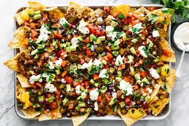

How to Impress your Friends with Nachos

Nachos are a staple for iconic appatizers. Here you'll find the best nacho recipe you've ever tasted. The combination of the mexican beef with the cheesy yet crispy nachos are a flavor bomb in your mouth!
To make as great of nachos as these, you only need a few ingridients like:
- Nachos
- Cheese
- 95/5 Ground Beef
- Onions
- Tomatoes
- Jalapenos
- Sour Cream
- Salsa
Now you can make the most fire nachose ever that'll be a great appetizer fir any occasion! Now to make them:
- First, Cook the beef and season it with any seasonings you like. We prefer taco seasoning.
- Next, set the ground beef aside and dice the onions, tomatoes, and jalepenos. Mix them in a bowl with lime juice and salt.
- Third, set the nachos in a sheet pan. Add the cheese on top and bake at 350* Farenheit for 7 minutes.
- Lastly, add on the beef, pico de gallo, and sour cream.